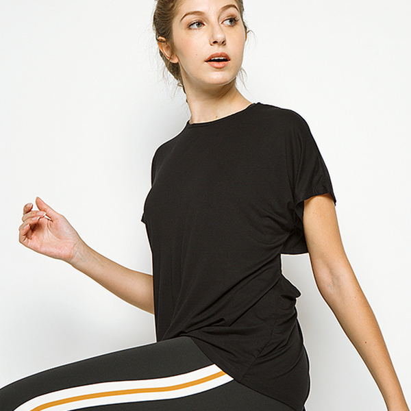

Mudahnya Tetap Bugar dan Berkonsentrasi Ketika Puasa
By COTTONINK on Apr 28, 2020 3:00 AM in Lifestyle ᅳ Umumnya saat seperti ini adalah waktunya kita meliburkan pakaian olahraga. Hal terbaik yang akan terjadi pada legging adalah dikenakan ketika bersantai di sofa sambil menghitung waktu menjelang maghrib. Hal yang terburuk? Menjadikannya kain pel tahan air. Ramadan adalah alasan dari itu semua di mana artinya kita harus berpuasa. (...)
Wanderlust: Menjelajahi Timur Jauh, Cina
By COTTONINK on Mar 30, 2020 3:00 AM in Wanderlust ᅳ Mari ikuti perjalanan Venus Aretha (@venusaretha) menjelajahi timur jauh, Cina. Dalam perjalanannya, dia mengunjungi kota-kota di sana dan membagikan pengalaman ketika berada di sana. Untuk mengetahui ceritanya, terus baca sampai habis ya! (...)
Rekomendasi Film Komedi Romantis untuk Ditonton Selama #DiRumahAja
By COTTONINK on Apr 3, 2020 3:00 AM in Lifestyle ᅳ Komedi romantis bisa menjadi alternatif tontonan selama masa self-quarantine di rumah. Lepaskan ketegangan harian Anda dan masuklah ke dunia fiksi yang membuat Anda tertawa dan terenyuh karena cerita yang ringan dan menghibur. (...)

Jangan Biarkan Virus Corona Menghalangi Anda Tampil Kece dengan Koleksi Tie Dye!
By COTTONINK on Apr 21, 2020 3:00 AM in Fashion ᅳ Pandemi virus corona membuat kebanyakan orang harus berada di rumah. Bagi para pekerja, ada beberapa yang bekerja dari rumah. Seperti #cottoninkteam yang sudah sebulan ini melakukan work from home. Tapi berkegiatan di rumah saja bukan halangan untuk tetap tampil kece. (...)

4 Alasan Kamu Harus Mulai Pakai Pads Pembersih Wajah yang Bisa Digunakan Kembali
By COTTONINK on Apr 20, 2020 3:00 AM in Beauty ᅳ Tren kecantikan tanpa limbah adalah topik yang saat ini paling banyak dibicarakan orang. Pernahkan Anda mendengar tentang pads pembersih wajah yang bisa digunakan kembali? Ya, produk ini dengan cepat meraih kepopuleran sebagai alternatif kecantikan yang ramah lingkungan. (...)

Wanderlust: Perjalanan ke California yang Epik
By COTTONINK on Apr 6, 2020 3:00 AM in Wanderlust ᅳ Melakukan road trip ketika traveling di luar negeri adalah ide yang harus dicoba. Anda tidak hanya akan lebih akrab dengan para rekan seperjalaan, tapi hal ini juga bisa menjadi cara untuk meminimalisir biaya liburan. Kontributor kami Ayesha Tantriana (@ayeshatantriana) akan menceritakan semenyenangkan apa melakukan road trip di California.(...)